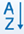
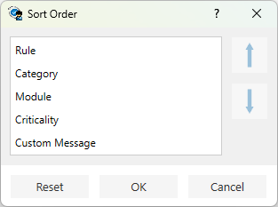
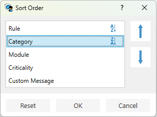
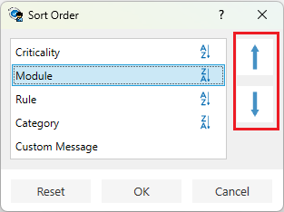
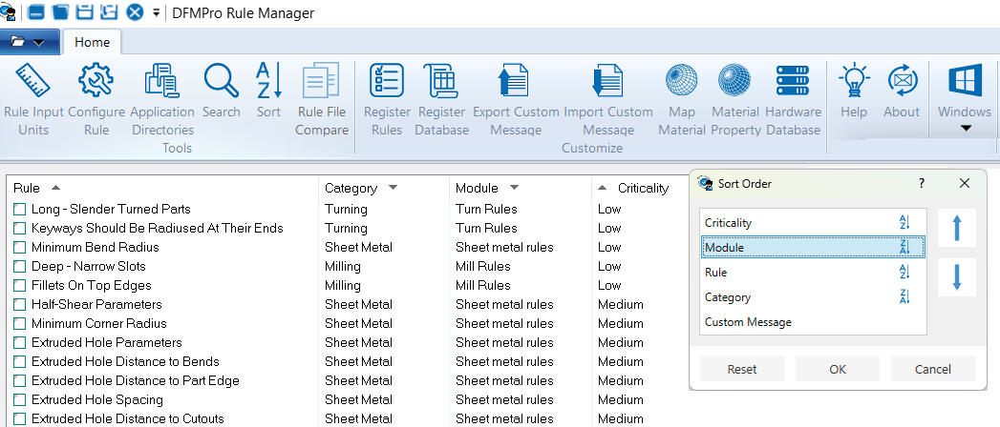
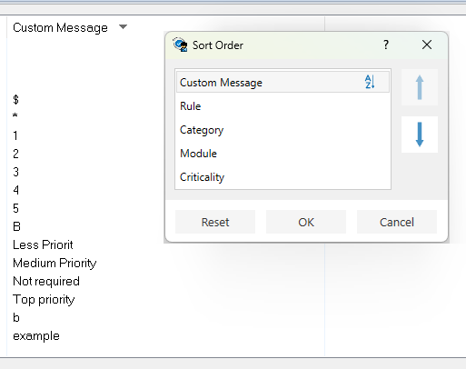

ルールマネージャーダイアログボックスで

Sort ボタンをクリックすると、［並び替え順］ダイアログボックスが表示されます。このダイアログでは、ルール、カテゴリ、モジュール、重要度、カスタムメッセージについて、列をアルファベット順に並び替えたり、上下矢印を使用して優先順位を設定したりできます。

ルールマネージャーを開き、ルール一覧を表示するためにルールファイルを選択します。
ルールマネージャーダイアログボックスで Sort ボタンをクリックすると、［並び替え順］ダイアログボックスが表示されます。
Header 名をクリックすると、列がアルファベット順（A-Z）に並び替えられます。
同じ Header 名を再度クリックすると、並び替え順が逆（Z-A）になります。
別の Header 名をクリックすると、その列がアルファベット順に並び替えられます。同じボタンを再度クリックすると順序が反転します。

ユーザーは Up および Down 矢印をクリックすることで、並び替えに使用する列の順序（優先順位）を定義することもできます。
Up および Down 矢印をクリックして、必要に応じてヘッダー名を移動します。定義された順序に基づいて、DFMPro はルール一覧を並び替えます。

必要な並び替えオプションをすべて定義したら、OK ボタンをクリックしてダイアログボックスを閉じ、ルールファイルに並び替えを適用します。
DFMPro は、［並び替え順］ダイアログボックスで定義された並び替えオプション（A-Z / Z-A）および優先順位に従って、ルール一覧を整列します。

［並び替え順］ダイアログボックスでカスタムメッセージ列の並び替えオプションを A-Z に設定した場合、コメントは次の順序で並び替えられて表示されます：
［並び替え］ダイアログボックスで同じヘッダー名をクリックすると、並び替え順が逆（Z-A）になります。

Cancel ボタンをクリックすると、並び替えオプションを適用せずにダイアログボックスを閉じます。
注記:
ルールファイルに並び替えを適用すると、その並び替え順は同一のルールマネージャーセッション内で保持されます。ユーザーがルールファイルを開く、作成する、または切り替える場合でも、アクティブなルールファイルは定義された順序で並び替えられます。
Reset ボタンをクリックすると、初期状態にリセットされます。
並び替えが正常に完了した後、再度 Sort ボタンをクリックすると、以前に定義された並び替え順を表示した状態で［並び替え順］ダイアログボックスが再度開きます。
ユーザーは、以前に設定した並び替え順を編集し、OK ボタンをクリックして再度並び替えを行うことができます。